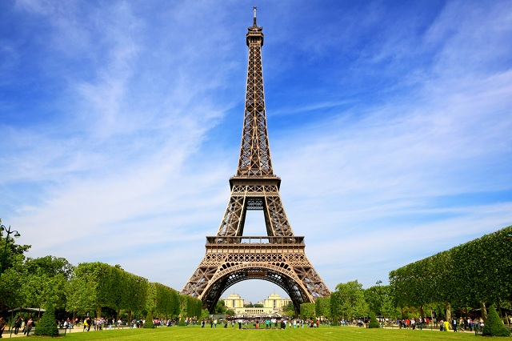
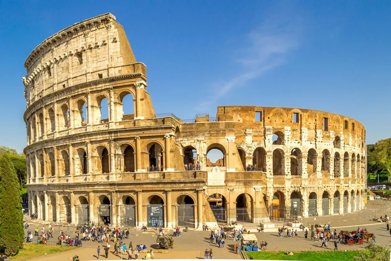

Bem vindo a Eurotour um site de viagens, onde voê tera acesso a passagens, hospedagem e o mais importante os pontos turisticos!
Te mostraremos os siguintes pornto turisticos.
- Torre Eiffel
- Coliseu de Roma
- Torre de Belem
1. Torre Eifel
A Torre Eiffel é um ponto turístico obrigatório em Paris, França. A sua construção foi em 1889 para celebrar os 100 anos da Revolução Francesa, e tem 325 metros de altura e 1.665 degraus.
Além de uma vista incrível que pode ser apreciada de diferentes maneiras, há vários restaurantes em torno da Torre Eiffel para aproveitar a culinária do país.
Devido à espera de pelo menos duas horas para conhecer a Torre, recomendamos comprar a entrada com antecedência.
2. Coliseu de Roma
O Coliseu de Roma ou Anfiteatro Flaviano é um dos principais pontos turísticos da itáliae um dos monumentos mais famosos do mundo.
Com uma construção que se iniciou no ano de 72 d.C e serviu como palco para gladiadores que lutavam entre si, ele atrai pelo menos 4 milhões de turistas todos os anos.
Devido à quantidade de turistas que costumam visitar o local, recomendamos que garanta o seu ingresso para o Coliseu com antecedência e evite filas.
3. Torre de Belem

A Torre de Belém é um dos pontos turísticos da Europa mais visitados e um dos principais de Portugal.
Ela foi construída entre 1514 e 1520, época das navegações, e tinha como objetivo proteger a cidade de invasores.
Em 1983, a Torre de Belém recebeu o título de Patrimônio da Humanidade pela UNESCO.